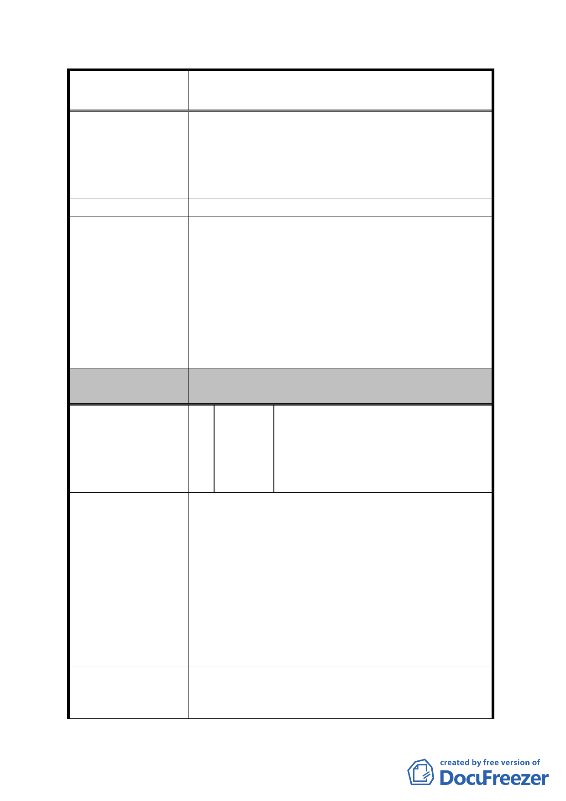

案名
變更臺北市內湖區蘆洲里附近部分工業區為
保護區、住宅區及道路用地主要計畫案
於可能讓此老舊社區煥然一新的計畫寄予厚
望，在此懇請都市計劃委員會的委員們將以上
建議所示之精神轉為文字載明於整體計畫案
內，以維護此區原土地所有人之原有權益並創
造一個更適合我們居住的環境。
建議辦法
一、 有關原位置保留建物 1 節，經初步檢視因涉及
是否影響鄰地開發建築及需繳納差額地價等
問題，後續將配合開發總隊研析結果及依專案
發展局回應意見
小組決議再予研議妥適方案。
二、 另有關建議將工業區變更為住宅區等節，查本
計畫案業參酌地區相關意見，劃設部分住宅區
以滿足地區住戶需求，另所陳提高容積率 1
節，因屬細部計畫內容，本局將納供參考。
委員會決議
一、 同編號 3 決議。
二、 同編號 5 決議。
謝景壽、謝欽宗、謝承翰、謝福堂、
謝育霖、謝郭阿秀、謝佳龍、郭子陽、
編 號 10 陳情人 謝文斌、郭傳年、郭玉華、蔡秀華、
謝文榮、謝明忠、陳明霖等 36 人連
署建議書
1. 重劃 A、B 區中新增之 15 米計畫道路建議修正為
8 米。
2. 建議條文明載：無論工業區或住宅區，凡參與土
地重劃之各土地所有權人，於重劃完成後所分配
陳情理由
土地的容積總量與重劃前法定容積總量至少相
等，以維護原土地所有權人之權益。或刪除「拾」
項所訂，以重劃方式來籌措其開發經費。
3. 考慮修正主要計畫之同時增加「回饋容積」，以
彰政府對當地住民與垃圾為伍三、四十年的回饋
德政。
1. 本地區為已發佈實施都市計畫細部計畫之地
建 議 辦 法 區，當年政府為了內湖垃圾山及內湖垃圾焚化爐
能順利運作，以解決台北市垃圾問題，市政府機
- 22 -